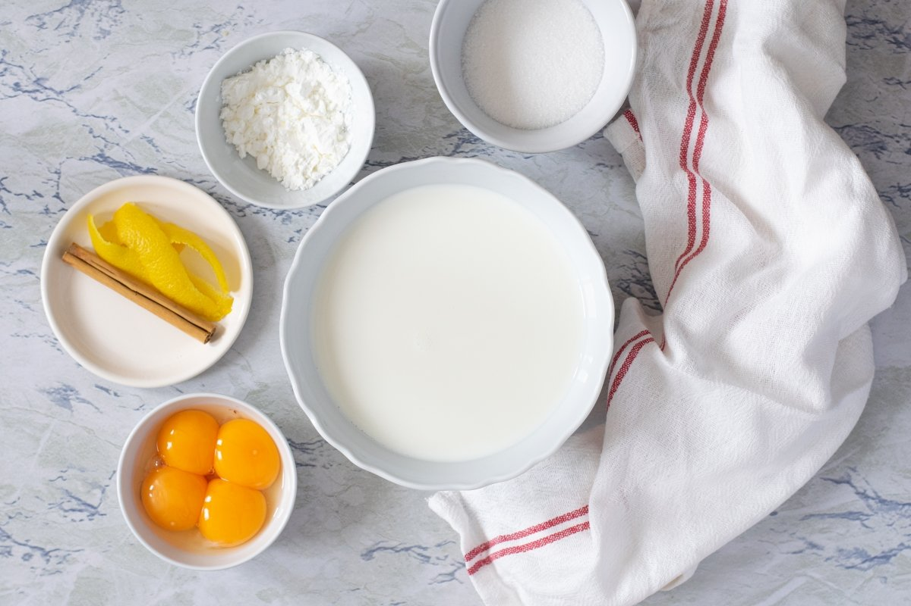
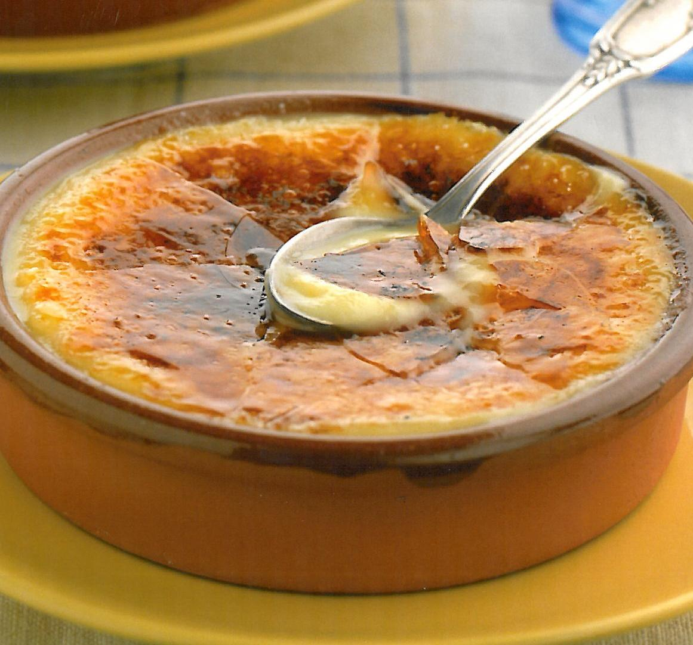
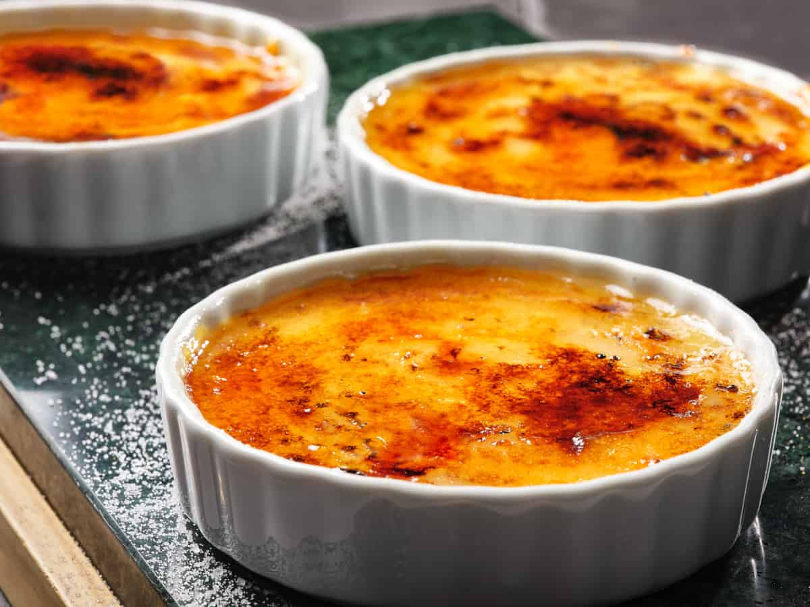
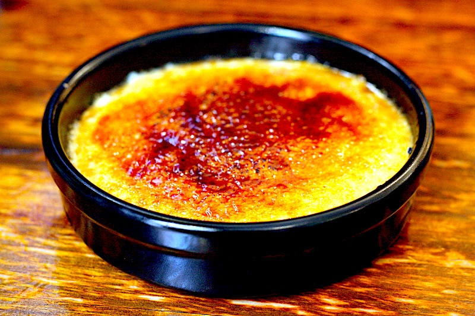
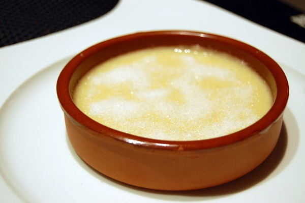

Crema Catalana
La crema catalana és considerada les postres per excel·lència de Catalunya. Encara que gairebé tothom l’ha tastada alguna vegada, encara hi ha qui en desconeix la recepta.
No calen molts ingredients ni passos complexos, només una mica de pràctica.
Es tracta d’una elaboració documentada des del 1924 i que continua endolcint paladars.
Ingredients:
- 500 ml de llet de vaca sencera
- 1 canonet de canyella
- La pela d’1 llimona (només la part groguenca)
- 4 rovells d’ou
- 100 g de sucre
- 20 g de midó de blat de moro

Passos a seguir:
- Poseu a bullir la llet amb el canonet de canyella i la pela de llimona. Quan arrenqui el bull, apagueu el foc i deixeu-ho infusionar uns minuts perquè els sabors de la canyella i la pela de llimona es barregin.
- Posem a bullir la col trossejada amb una mica de sal. Després de 30 minuts, afegim les patates tallades a daus. Deixem tot bullint durant 30 minuts addicionals perquè quedi tot ben tovet i així costi menys de trinxar.
- Torneu a arrencar el bull a la llet i, quan bulli, afegiu-la a poc a poc a la barreja de rovells, sucre i midó, abaixant el foc al mínim i sense deixar-ho de remenar amb una espàtula de fusta. Deixeu-ho coure 30 s.
- Quan s’hagi espesseït, passeu-ho per un colador per evitar que hi quedi algun grumoll i també per treure el canonet de canyella i la pela de llimona.
- Poseu-ho en cassoletes de terrissa i deixeu-ho refredar.
- A l'hora de servir la crema, poseu-hi un grapat de sucre al damunt i cremeu-lo amb una pala de cremar.
Possibles presentacions:




El millor postre de tots.